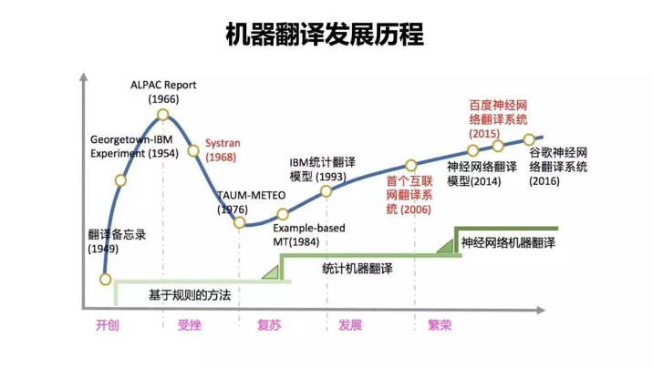
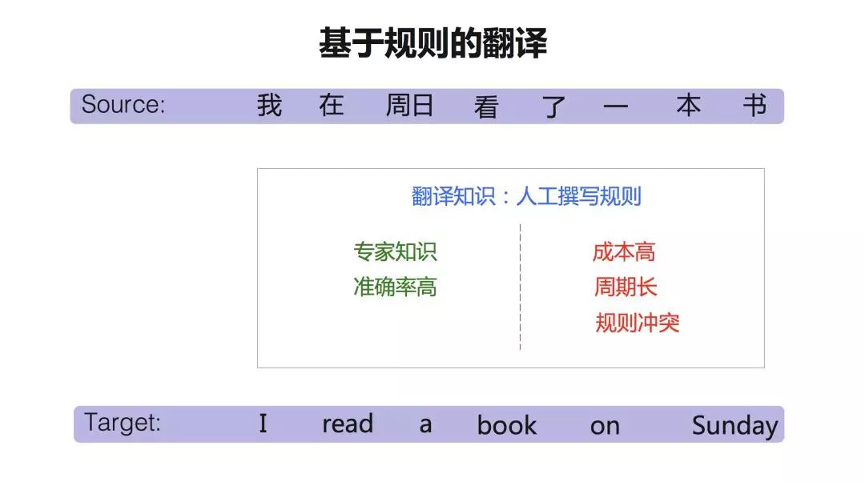
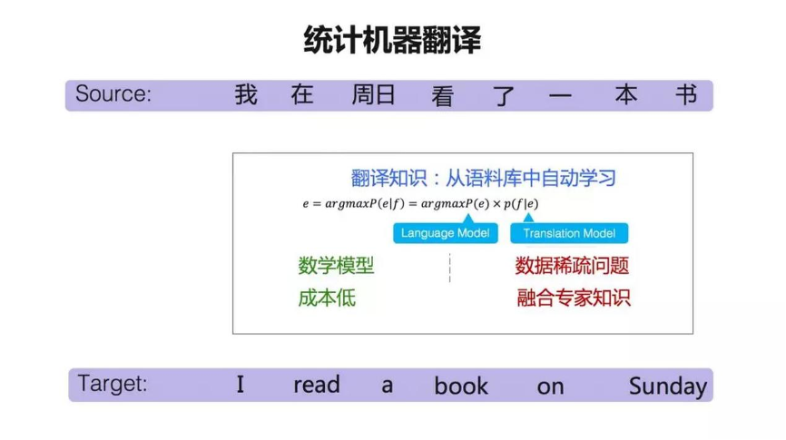
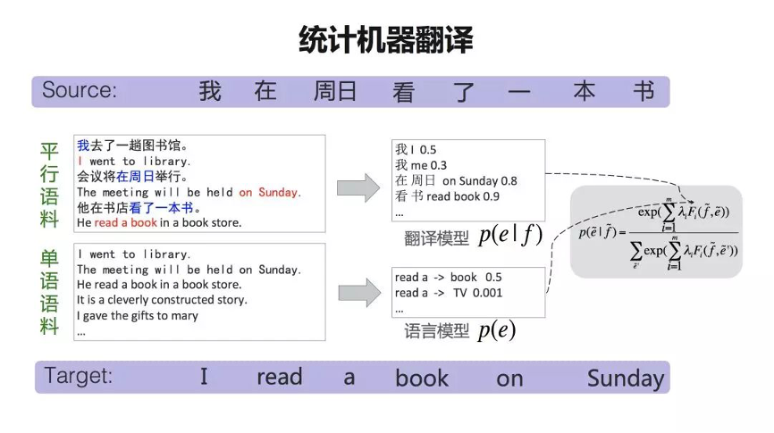
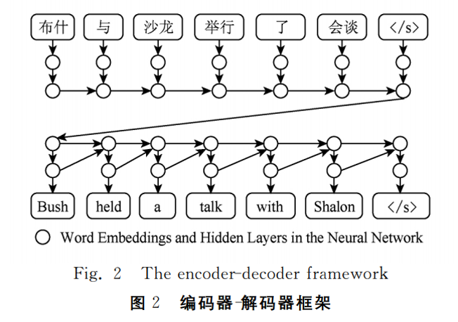
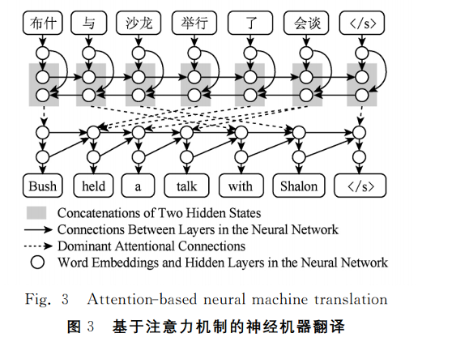

机器翻译发展历程
机器翻译，自20世纪30年代初露端倪以来，如今已取得了突破性进展。从最初基于规则的机器翻译，到基于统计的机器翻译，再发展到现今基于人工神经网络的机器翻译。
由于算法和核心技术不同，机器翻译的实现方式各异。依据知识处理方式，可将其分为三类：一类为规则法，该类包括直接法、转换法、中间语法；另一类为语料库法，该类可细分为实例法、统计法、神经网络法；还有一类为混合法。
 图片1基于规则的翻译
规则法是20世纪90年代前的主流方法，主要借助基于人工定制的规则库、词典库以及各类知识库，需高度依赖人类经验知识，因而往往实用性欠佳。
基于规则的翻译，翻译知识来自人类专家。找人类语言学家来写规则，这一个词翻译成另外一个词。这个成分翻译成另外一个成分，在句子中的出现在什么位置，都用规则表示出来。这种方法的优点是直接用语言学专家知识，准确率非常高。缺点是什么呢？它的成本很高，比如说要开发中文和英文的翻译系统，需要找同时会中文和英文的语言学家。要开发另外一种语言的翻译系统，就要再找懂另外一种语言的语言学家。因此，基于规则的系统开发周期很长，成本很高。此外，还面临规则冲突的问题。随着规则数量的增多，规则之间互相制约和影响。有时为了解决一个问题而写的一个规则，可能会引起其他句子的翻译，带来一系列问题。而为了解决这一系列问题，不得不引入更多的规则，形成恶性循环。
 图片2语料库法，又称经验主义法，是一种由标注语料，特别是双语或多语平行语料，构成知识源的数据驱动型机器翻译系统构建方式。该法既无需词典亦不用规则，而是以语料统计为主。语料库法主要得益于当代语料技术的发展，目前仍是机器翻译系统的主流构建方式，具体包括实例法、统计法、神经网络法。三者翻译知识的来源均为语料库，其区别在于前者在翻译过程中仍需使用语料库，且语料库本身就是翻译知识的一种表现形式，而后两者在翻译过程中无需再使用语料库，其知识的表示是统计数据，而非语料库本身。
统计机器翻译
与实例法类似，统计法也是语料库法的一种。早在1947年，Weaver就提出了利用统计法解决机器翻译问题，但受当时科技水平所限，尚不具备开发统计机器翻译的能力，直到 1990年前后，IBM公司的开发人员才将其付诸实践。统计法主要依赖双语或多语平行语料库，通过词对齐、翻译规则抽取等手段实现翻译建模，然后根据译语规则并借助所学知识进行自动翻译。实际上，统计机器翻译过程可视为信息传输过程，即源语经噪声信道发生扭曲变化后产生译语。翻译的任务在于将观察到的源语恢复为最有可能的译语，即同一源语句段可能对应多个候选译语句段，出现概率最大的便是译文。
因此，基于统计法的翻译完全是一个概率问题，任何一个译语句子都有可能是任何一个源语句子的译文，只是出现概率大小不同，翻译的目的就是要找到出现概率最大的句子。较规则法而言，统计法克服了翻译知识获取的瓶颈问题，因而实用性较强，曾一度为机器翻译的主攻方向。
 图片3翻译知识主要来自两类训练数据：平行语料，一句中文一句英文，并且这句中文和英文，是互为对应关系的，也叫双语语料；单语语料，比如说只有英文我们叫单语语料。
从平行语料中能学到什么呢？翻译模型能学到类似于词典这样的一个表，一般称为『短语表』。比如说『在周日』可以翻译成『on Sunday』。后面还有一个概率，衡量两个词或者短语对应的可能性。这样，『短语表』就建立起两种语言之间的一种桥梁关系。那么我们能够用单语语料来做什么呢？我们用单语语料来训练语言模型。
 图片4语言模型是做什么事情的呢？就是衡量一个句子在目标语言中是不是地道，是不是流利。比如这里说『read a book』，这个表述是没有问题的，『read a 』后面跟一个『book 』这个词的概率可能是0.5，那么如果说『read a TV』呢？可能性就很低。因为这不符合目标语言的语法。所以，翻译模型建立起两种语言的桥梁，语言模型是衡量一个句子在目标语言中是不是流利和地道。这两种模型结合起来，加上其他的一些特征，就组成了一个统计机器翻译这样的一个公式。
神经网络机器翻译
编码器-解码器框架
端到端神经机器翻译的基本思想是通过神经网络直接实现自然语言之间的自动翻译。为此，神经机器翻译通常采用编码器－解码 器（encoder－decoder） 框架实现序列到序列的转换。 以图2为例，给定一个中文句子“布什 与 沙 龙 举行 了 会 谈”，编 码 器－解 码 器 框 架 首 先 为 每个中文词生成向量表示，然后通过一个递归神经网络（recurrent neural network）从左向右生成整个 中文句子 的 向 量 表 示．其 中，“〈/s〉”表 示 句 尾 结 束 符．我们将源语言端所使用的递归神经网络称为编 码器，即将源语言句子编码成一个稠密、连续的实数向量。
相对于传统的统计机器翻译，基于编码器－解码器框架的神经机器翻译具有2个优点：
1）直接从生数据中学习特征。统计机器翻译需要人工设计定义在隐结构上的特征来刻画翻译规律．由于自然语言的高度复杂性，如何确保特征设计覆盖全部语言现象成为重要挑战．神经网络最大的优势在于能够直接从生数据中学习特征．研究结果表明，编码器－解码器框架学习到的句子向量表示能够将句法不同、语义相同的句子聚在一起，同时能够将通过调换主语和宾语产生的句法相同、语义不同的句子区分开。
2）能够捕获长距离依赖。由于自然语言的复杂性和多样性，表达相同含义，不同语言之间的词语顺序差异性非常大．这种语言结构差异给统计机器翻译带来了严重的挑战．用户在使用统计机器翻译系统时，经常会发现单个词语翻译很准确，但整体上难以形成合乎语法的句子．这种现象产生的根源在于，统计机器翻译通过隐结构描述翻译过程，为了在指数级的隐结构组合空间中实现高效搜索，不得不采用局部特征来支持动态规划算法。
尽管如此，编码器－解码器框架仍然面临一个严重的问题：编码器生成的源语言句子向量表示的维度与源语言句子长度无关．换句话说，无论是10个词的源语言句子、还是100个词的源语言句子，都会被编码为固定维度的向量．这对于编码器处理长距离信息传递带来了极大的挑战．事实上，即使采用长短时记忆，编码器往往还是难以有效处理长距离依赖，在长句上的翻译质量显著下降。
 图片5注意力机制
为了解决定长源语言句子向量难以捕获长距离依赖的问题，引入了注意力（attention）机制动态计算源语言端上下文。 如图3所示，基于注意力机制的神经机器翻译采用了完全不同的编码器，其目标不再是为整个源语言句子生成向量表示，而是为每个源语言词生成包含全局信息的向量表示。
注意力机制改变了信息传递的方式，能够动态计算最相关的上下文，从而更好地解决了长距离信息传递问题并显著提升了神经机器翻译的性能。因此，基于注意力机制的编码器－解码器模型目前已成为神经机器翻译的主流方法并得到广泛使用。
 图片6